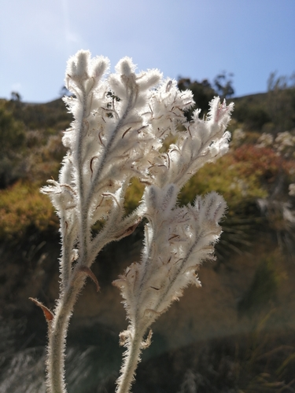

Lanariaceae
Cape Edelweiss / Lambstails Family
Lanariaceae is a small, monotypic family of monocotyledonous flowering plants in the order Asparagales, containing only the species Lanaria lanata. This perennial herb is endemic to the Cape region of South Africa and is characterized by its basal rosette of linear leaves and a distinctive, densely woolly, branched inflorescence bearing small, pinkish flowers.
Overview
The Lanariaceae family consists of a single species, Lanaria lanata, commonly known as Cape edelweiss or lambstails. It is a perennial herb endemic to the fynbos biome of the Western Cape and Eastern Cape provinces of South Africa, often found growing in sandy soils, especially after fires. The plant grows from a woody rhizome and forms a basal tuft of long, narrow leaves.
Its most striking feature is the tall, branched inflorescence (a panicle) which is densely covered in distinctive branched, woolly hairs, giving it a white or grayish, felt-like appearance – hence the common name "Cape edelweiss" (though it is unrelated to true edelweiss, Leontopodium). The small, pinkish or purplish flowers are embedded within this woolly structure. The plant flowers mainly in spring and summer, often stimulated by fire.
Lanariaceae has no significant economic importance but is of botanical interest due to its unique morphology and restricted distribution. Phylogenetically, it belongs to the order Asparagales and is considered closely related to families like Hypoxidaceae and Asteliaceae.
Quick Facts
- Scientific Name: Lanariaceae H.Huber ex R.Dahlgren
- Common Name: Cape Edelweiss Family, Lambstails
- Number of Genera: 1 (Lanaria)
- Number of Species: 1 (Lanaria lanata)
- Distribution: Endemic to the Cape region of South Africa
- Evolutionary Group: Monocots - Asparagales
Key Characteristics
Growth Form and Habit
Perennial herbs growing from a short, stout, woody rhizome. Forms basal rosettes.
Leaves
Leaves are mostly basal, arranged distichously (in two ranks), simple, linear, grass-like, somewhat rigid or leathery, with entire margins and parallel venation. They have sheathing bases.
Inflorescence
Flowers are borne in a large, terminal, much-branched panicle. The entire inflorescence axis and branches are densely covered with characteristic branched, white or grayish woolly hairs (indumentum).
Flowers
Flowers are small, bisexual, actinomorphic (radially symmetrical), and sessile or shortly pedicellate within the woolly panicle. Key features include:
- Perianth: Consists of 6 petaloid tepals arranged in two whorls of 3, fused at the base into a short tube. Tepals are typically pinkish, purplish, or mauve, persistent, and hairy on the outside.
- Androecium: 6 stamens, inserted on the perianth tube. Filaments are short; anthers are basifixed and dehisce via longitudinal slits.
- Gynoecium: Ovary is superior, composed of 3 fused carpels forming 3 locules with axile placentation. Each locule contains a single basal ovule. A single slender style with a small, capitate or slightly 3-lobed stigma is present.
Fruits and Seeds
The fruit is a loculicidal capsule, enclosed by the persistent woolly perianth. It typically contains only one seed (due to abortion of others).
Chemical Characteristics
Contains flavonoids. Lacks the highly reduced flowers and single stamen of Lacistemataceae.
Field Identification
Identifying Lanariaceae (Lanaria lanata) is straightforward due to its unique inflorescence:
Primary Identification Features
- Habit: Rhizomatous perennial herb with a basal rosette of linear, grass-like leaves.
- Inflorescence: A tall, branched panicle densely covered in white or grayish branched woolly hairs.
- Flowers: Small, pinkish/purplish, with 6 tepals and 6 stamens, embedded in the woolly panicle.
- Ovary Position: Ovary is superior.
- Habitat: Fynbos vegetation in the Cape region of South Africa, often after fire.
Secondary Identification Features
- Leaves: Distichously arranged, keeled.
- Rhizome: Woody underground rhizome.
- Fruit: Small capsule hidden within the persistent woolly flower parts.
Seasonal Identification Tips
- Spring/Summer (especially after fire): Flowering season. The tall, woolly inflorescence is highly conspicuous.
- Vegetative State: The basal rosette of rigid, linear leaves is less distinctive but can be recognized in its fynbos habitat.
Common Confusion Points
The woolly inflorescence of Lanaria lanata is quite unique, making confusion less likely once the inflorescence is seen. Vegetatively, it might resemble other fynbos monocots:
- Restionaceae (Restionids): Also common in fynbos, often grass-like or rush-like, but have highly reduced flowers enclosed in chaffy bracts, typically arranged in spikelets, and lack the dense woolly panicle of Lanaria.
- Iridaceae (Iris family): Some fynbos irids have linear leaves, but flowers are typically larger, showier, with 3 stamens and often an inferior ovary.
- Asphodelaceae (e.g., Bulbine): Some have linear, sometimes fleshy leaves in basal rosettes, but typically have racemes of yellow or orange flowers with superior ovaries.
- Hypoxidaceae (e.g., Hypoxis, Spiloxene): Also in Asparagales, often with linear leaves, but typically have yellow star-like flowers and inferior ovaries.
Field Guide Quick Reference
Look For:
- Rhizomatous herb with basal, linear leaves
- Tall, branched inflorescence (panicle)
- Inflorescence densely covered in white/gray woolly hairs
- Small pinkish/purplish flowers embedded in wool
- 6 tepals, 6 stamens
- Superior ovary
Key Variations:
- Monotypic family - variations are within Lanaria lanata (e.g., height, flower color intensity).
Notable Examples
The family is monotypic, containing only one genus and one species.

Lanaria lanata
Cape Edelweiss / Lambstails
The sole species in the family Lanariaceae, endemic to the Cape fynbos of South Africa. A perennial herb growing from a rhizome, it forms a tuft of linear leaves and produces a striking, tall, branched panicle densely covered in white or grey woolly hairs, bearing small pinkish flowers.
Phylogeny and Classification
Lanariaceae is a monocot family placed in the large order Asparagales. This order belongs to the main monocot clade, distinct from the Commelinids (which include Poales).
Within Asparagales, Lanariaceae is part of the core group. Molecular phylogenetic studies place it in a well-supported clade that also includes the families Asteliaceae, Blandfordiaceae, Boryaceae, and Hypoxidaceae. The exact relationships among these five families can vary slightly between studies, but they consistently group together, representing a distinct lineage primarily distributed in the Southern Hemisphere (except for some Hypoxidaceae).
Position in Plant Phylogeny
- Kingdom: Plantae
- Clade: Angiosperms (Flowering plants)
- Clade: Monocots
- Order: Asparagales
- Family: Lanariaceae
Evolutionary Significance
Lanariaceae, despite being monotypic, is significant for:
- Asparagales Phylogeny: Its position within the Hypoxidaceae-Asteliaceae clade helps define the relationships within this part of the Asparagales tree.
- Unique Morphology: The densely woolly inflorescence with branched hairs is a highly specialized and unique morphological feature among monocots.
- Endemism and Biogeography: As a Cape endemic, it contributes to the unique biodiversity of the Cape Floristic Region and raises questions about the biogeographical history of its clade, which is largely Southern Hemisphere based.
- Fire Adaptation: Its tendency to flower after fire highlights adaptations common in the fynbos ecosystem.